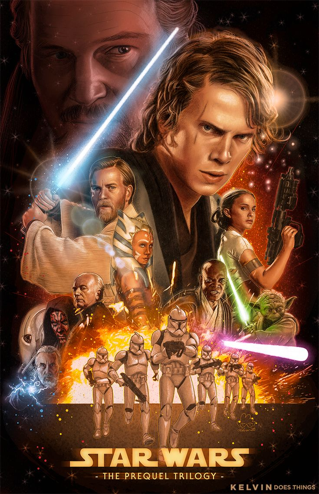

Original Trilogy Argument
The Original Trilogy is where Star Wars began with a trilogy of amazing movies, without them the rest of Star Wars wouldn’t exist. They are what first introduced us to the universe of Star Wars, a legendary battle between the forces of good and evil, the Jedi vs the Sith, the Rebellion vs the Empire. Luke Skywalker and the rest of the cast are amazing characters that tell a compelling story with Luke starting as a poor farmer on Tatooine, rising to become a Jedi, and defeating a galaxy-spanning evil empire. They are full of high stakes, plot twists, and a great story that started the Skywalker Saga.
While I am a big fan of the prequels as well, Revenge of the Sith is my favourite Star Wars movie, I believe that the Original Trilogy is a better trilogy. While they still have their moments the dialogue is not as serious as the Originals and the pacing isn't as good. For example is Anakin destroying the Trade Federation frigate in Episode 1, a 10-year-old boy who has never flown a starship flying into a heavily guarded capital ship during a battle and somehow destroying it. I understand he is meant to be a talented pilot and the chosen one, but that can only go so far. Another issue is there are major time skips between all three movies, while they are present in the Original Trilogy they are less obvious. An example is at the end of Attack of the Clones we see the beginning of the Clone Wars and at the beginning of Revenge of the Sith we see the end of them. While that did lead to an amazing animated show I would have liked to see the middle of the Clone Wars at least in flashbacks.
That is why I believe that the Original Trilogy is a better trilogy than the prequels. To conclude both are fantastic but the Originals have more depth and better pacing.
Star Wars: A New Hope Poster

Prequel Trilogy Argument
The Prequel Trilogy to Star Wars began the series as a whole, setting the story for the original trilogy, and the future films. It describes a large portion of the background to where Star Wars takes place, and the way the life of a Jedi functions in the age where they were abundant. The Prequel Trilogy also brings up tales of the Sith, and we are given a very memorable brotherly relationship between Anakin and Obi-Wan. Their relationship is what ultimately made the scene between Darth Vader and Obi-Wan to be that much more heartbreaking to people watching the series from start to finish.
The Prequel Trilogy delivers a lot of originality in terms of plot, characters, and lore behind the series as a whole. In the Original Trilogy, the talk of the Sith are simmered down, and information regarding them is very minimal, due to there only being Darth Sidious and Darth Vader. The Prequel Trilogy's information about the Sith and Jedi make the rest of the Original Trilogy that much more enjoyable to watch, while also being an exponentially lovable trilogy on its own.
The Original Trilogy is certainly the most popular of the Star Wars series, but the Prequel Trilogy has made the most memories and had some of the most world-building scenes as a whole. Which is why i think they are better than the Original Trilogy.
Star Wars Prequel Poster

Sequel Trilogy Argument
The Sequel Trilogy continues the Skywalker Saga with new heroes like Rey, Finn, and Poe, while bringing back classic characters such as Luke, Leia, and Han. It explores legacy and hope in a galaxy still recovering from war.
The Sequels offered a future view on the series after the events of the Original Trilogy, for people who have continued interest in the growing roles of new characters and plots, while also retaining the original idae behind the films.
Though opinions are mixed, the Sequels introduced stunning visuals, emotional moments, and a new generation of fans to the Star Wars universe. It may not be perfect, but it carries the spirit of adventure and redemption that defines Star Wars.